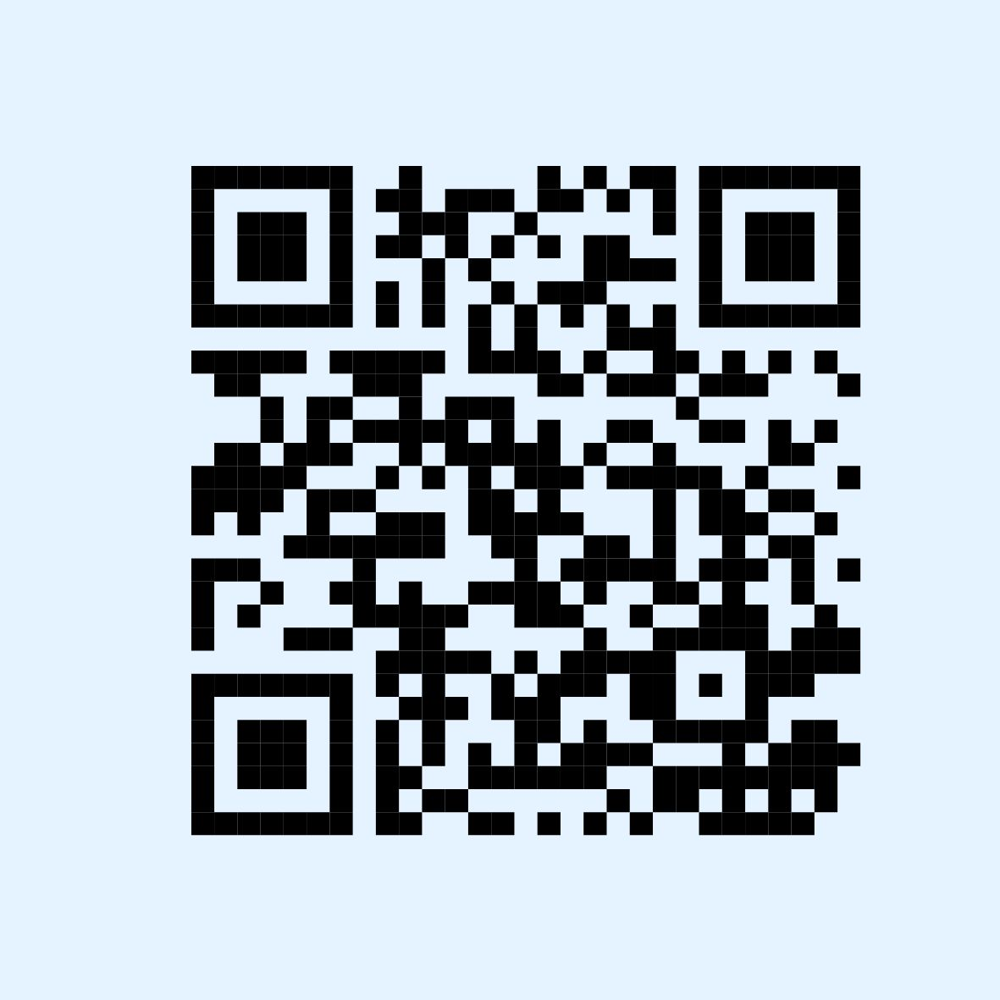
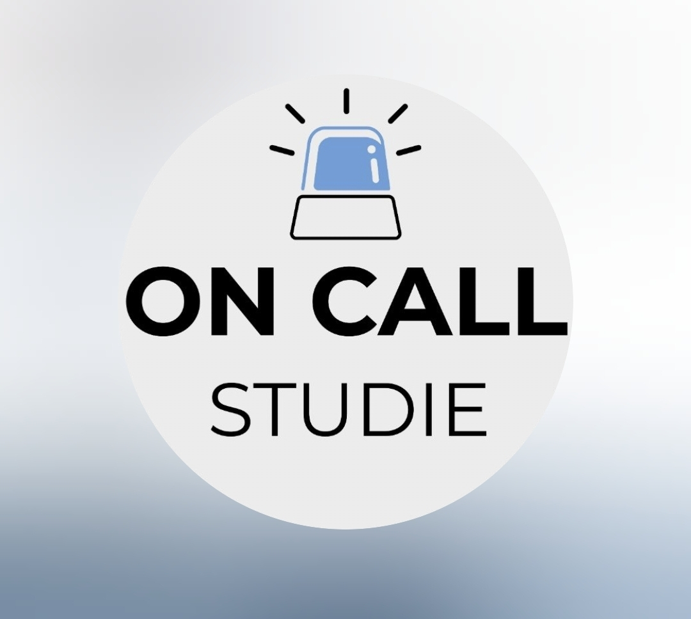

Wir sind ein Forschungsteam an der Universität des Saarlandes und führen eine wissenschaftliche Studie zum Umgang mit belastenden und potenziell traumatischen Ereignissen im beruflichen Alltag durch. Für dieses Forschungsprojekt suchen wir Personen, die in sogenannten Hochrisikoberufen arbeiten, also Berufen, in denen man regelmäßig mit besonders belastenden Situationen konfrontiert wird – zum Beispiel bei der Polizei, Feuerwehr oder im Rettungsdienst.
In dieser Studie wollen wir untersuchen, wie Menschen in beruflichen Tätigkeiten mit erhöhten Belastungen mit emotional herausfordernden oder potenziell traumatischen Arbeitssituationen umgehen. Ziel der Studie ist es, besser zu verstehen, wie Menschen solche Erfahrungen bewältigen und wie sich diese Prozesse auf das psychische Wohlbefinden auswirken. Dabei interessiert uns, welche Strategien Sie nutzen, um schwierige Situationen zu bewältigen, und welche Faktoren – wie Unterstützung oder zusätzliche Belastungen – dabei eine Rolle spielen. Die Studie wird in Deutschland durchgeführt. Die Datenerhebung erfolgt online über SoSciSurvey sowie über eine Smartphone-App (SEMA3) für wiederholte Kurzbefragungen im Alltag.
Mit Ihrer Teilnahme tragen Sie dazu bei, die psychologische Forschung praxisnah weiterzuentwickeln und langfristig bessere Unterstützungsangebote für stark belastete Berufsgruppen zu gestalten. Darüber hinaus leisten Sie mit der Teilnahme an der Studie einen Beitrag, die Sichtbarkeit dieses Themas zu erhöhen.

Nach drei Monaten und nach sechs Monaten erhalten Sie jeweils per E-Mail einen Link zu einer weiteren Online-Befragung, die inhaltlich an die Erstbefragung anknüpft und jeweils ca. 30 min dauert.
In unserem kurzen Video erfahren Sie mehr über die OnCall-Studie, den Ablauf und die Möglichkeit zur Teilnahme.
Haben Sie Interesse, teilzunehmen? Schreiben Sie uns gern eine Email oder geben Sie Ihre E-Mail-Adresse direkt hier an, um eine Einladung zur Studie zu erhalten. Alternativ können Sie auch direkt über den QR-Code unten mit der Studie beginnen.
Scannen Sie den QR-Code oder nutzen Sie den Link, um direkt mit der Studie zu beginnen.
Fragebogen mit diesem Link öffnenHier finden Sie Informationsmaterialien zur Studie:
📄 Flyer zur Studie herunterladen 📄 Infoblatt zur Studie herunterladen 📄 Instruktionen für SEMA3-App herunterladen 📄 QR-Code für die Studie herunterladen 📄 QR-Code für die Website herunterladenBonanno, G. A. (2021). The end of trauma: how the new science of resilience is changing how we think about PTSD. Basic Books.
Gärtner, A., Behnke, A., Conrad, D., Kolassa, I.-T., & Rojas, R. (2019). Emotion regulation in rescue workers: Differential relationship with perceived work-related stress and stress-related symptoms. Frontiers in Psychology, 9. https://doi.org/10.3389/fpsyg.2018.02744
Greenaway, K. H., Kalokerinos, E. K., & Williams, L. A. (2018). Context is everything (in emotion research). Social and Personality Psychology Compass, 12(6), e12393. https://doi.org/10.1111/spc3.12393
Lee, J. H., Lee, D., Kim, J., Jeon, K., & Sim, M. (2017). Duty-related trauma exposure and posttraumatic stress symptoms in professional firefighters. Journal of Traumatic Stress, 30(2), 133–141. https://doi.org/10.1002/jts.22180
Lee, D., & Lee, H. S. (2021). Examining associations of ego resilience, depression, stress, and the Stages of Motivational Readiness for Change (SMRC). Journal of Affective Disorders Reports, 5, 100178. https://doi.org/10.1016/j.jadr.2021.100178
Die Erinnerung an traumatische oder belastende Erfahrungen im Rahmen der Untersuchung kann vorübergehend psychische Belastungen auslösen.
Wenn Sie sich akut belastet fühlen oder Unterstützung benötigen, können Sie folgende Angebote kontaktieren:
TelefonSeelsorge – Die kostenfreie Hotline ist rund um die Uhr erreichbar.
Telefon: 0800 111 0 111 und 0800 111 0 222
Weitere Informationen finden Sie unter: https://www.telefonseelsorge.de
Krisenchat – Digitale, psychosoziale Beratung vertraulich per Chat in Echtzeit, rund um die Uhr, ohne Registrierung.
Weitere Informationen finden Sie unter: https://krisenchat.de
Hilfetelefon „Gewalt gegen Frauen“ – Unterstützung per Telefon und Online-Beratung rund um die Uhr.
Telefon: 08000 116 016
Weitere Informationen finden Sie unter: https://www.hilfetelefon.de
Akute Krisen / Notfall – Bitte wenden Sie sich an Ihren Arzt, Psychotherapeuten, die nächste psychiatrische Klinik oder den Notarzt.
Telefon: 112
Kontakt zur Studie – Bei Fragen oder Unterstützungsbedarf erreichen Sie die Forscher:innen der OnCall-Studie. Wir sind erreichbar unter:
studie-oncall@uni-saarland.de
Worum geht es?
In dieser Online-Studie untersuchen wir, wie Menschen in Hochrisikoberufen im Arbeitsalltag mit belastenden und stressigen Ereignissen umgehen und welche Bewältigungsstrategien sie in diesem Kontext nutzen.
Wen suchen wir?
Personen, die im beruflichen Alltag regelmäßig mit sehr belastenden Situationen umgehen müssen (z.B. im Rettungsdienst, der Feuerwehr, Polizei oder auch psychosozialen Notfallversorgung).
Was erwartet Sie?
Eine Studie über mehrere Wochen, in der nach dem Erleben eines kritischen Ereignisses für 7 Tage täglich 5 mal sehr kurz (2-3 Minuten) situationsbezogen nach Stress und Coping gefragt wird. Zusätzlich längere Fragebögen 1) zu Beginn, 2) nach 3 Monaten und 3) nach 6 Monaten.
Was bieten wir?
Nach Abschluss der Ersterhebung erhalten Sie einen persönlichen Überblick über Ihre Daten (persönliche Profile, anhand derer eigenes Verhalten sichtbar gemacht werden kann),
nach Abschluss der gesamten Studie erhalten Sie dann 100 € – entweder als Wunschgutschein oder direkt auf Ihr Konto!
Läuft die Studie noch?
Ja! Die Studie ist im Mai 2026 gestartet und wir suchen immer noch Teilnehmende!
Was ist, wenn ich die Studie vorzeitig abbrechen muss?
Die Teilnahme ist vollständig freiwillig und kann jederzeit ohne Angabe von Gründen beendet werden, ohne dass Ihnen darauf Nachteile entstehen. Hierfür schreiben Sie uns bitte eine E-Mail mit Ihrer VP-Nummer. Sie erhalten dann eine anteilige Vergütung.
Wie kann ich an der Studie teilnehmen - Was ist der erste Schritt?
- Um an der Studie teilzunehmen, klicken Sie auf den angegebenen Link oder scannen Sie den QR-Code.
Wenn Sie sich zur Teilnahme entscheiden, beginnen Sie im Anschluss mit der ersten Onlinebefragung. Bitte nehmen Sie sich dafür ausreichend Zeit und vermeiden Sie Ablenkungen. Es gibt keine richtigen oder falschen Antworten – wichtig ist Ihre persönliche Einschätzung.
Wie funktioniert die Studie im Allgemeinen?
Die Teilnahme erfolgt digital über eine Onlineplattform (SoSci Survey) und über die App SEMA3, in der Sie Fragen einfach zugänglich beantworten können.
Sobald Sie ein besonders stressiges Erlebnis bei der Arbeit haben (also ein „kritisches Ereignis“ geschieht), erhalten Sie ab diesem Zeitpunkt regelmäßig Erinnerungen über die App. Die einzelnen Befragungen sind sehr kurz und dauern in der Regel nur wenige Minuten. Der Zeitpunkt für die Erinnerungsbenachrichtigung ist dabei vom Forschungsteam möglichst an Ihren persönlichen Arbeitsplan angepasst.
Was sind die ersten Schritte zur Teilnahme?
Nach Ihrer Anmeldung erhalten Sie von uns eine E-Mail mit dem entsprechenden Zugangslink sowie einer detaillierten Anleitung zur Teilnahme. Sollten Sie diese E-Mail trotz Registrierung nicht erhalten haben, überprüfen Sie bitte zunächst Ihren Spam-Ordner. Falls Sie die Nachricht dort ebenfalls nicht finden, kontaktieren Sie uns bitte direkt.
Was ist der weitere Ablauf der Studie, was ist der zweite Teil der Studie?
Mit dem Ausfüllen des Fragebogens haben Sie den ersten Teil der Studie erfolgreich abgeschlossen. Als Nächstes folgt der zweite Studienteil mit den Smartphone-Befragungen über die SEMA3-App. Alle hierfür notwendigen Informationen erhalten Sie per E-Mail. Bitte prüfen Sie dabei auch Ihren Spamordner.
Was ist hierbei zu beachten?
Der zweite Teil in der App bildet das Kernstück der Studie! Sollten Sie nach Abschluss des ersten Teiles nicht mehr aktiv sein und/oder die SEMA-App nicht herunterladen, behalten wir uns vor, Sie noch einmal zu kontaktieren. Dies dient auch dazu, mögliche technische Schwierigkeiten zu klären und zu überbrücken.
Bitte stellen Sie sicher, dass die App installiert ist und Benachrichtigungen aktiviert sind. Achtung: Wenn Sie den Fragebogen (1. Teil der Studie) an einem Werktag bis 16:00 Uhr ausgefüllt haben, startet die erste Befragungsphase in der SEMA3-App bereits am nächsten Werktag, andernfalls am darauffolgenden Werktag. Wenn Sie keine Benachrichtigungen erhalten, öffnen Sie bitte einmal die App, damit sie aktualisiert wird und Benachrichtigungen aktiviert werden können. Bitte öffnen Sie die App auch einmal beim Wechsel in den nächsten Studienteil, damit dieser korrekt gestartet wird. Über die App erhalten Sie kurze Befragungen zu Ihrem Arbeitsalltag, Ihrem Wohlbefinden und möglichen belastenden Ereignissen.
Warum gibt es so viele Erinnerungen an einem Tag?
Wir wissen, dass in Ihrem Berufsalltag oft wenig Zeit bleibt, um Fragen zu beantworten, dass Schichten lang sind und kaum Raum für Pausen besteht. Gerade deshalb ist es besonders wichtig, Ihre Erfahrungen möglichst zeitnah zu erfassen. Je mehr Zeit zwischen dem Erleben einer Situation und dem Beantworten der Fragen vergeht, desto schwieriger ist es, die Antworten auf die tatsächliche Situation zurückzuführen und mögliche Veränderungen in Ihrer Reaktion zu erkennen.
Um sowohl die wissenschaftliche Qualität zu sichern als auch den Ablauf Ihres Arbeitstags zu berücksichtigen, haben wir die Befragungen auf fünf Zeitpunkte pro Tag verteilt. So können wir Ihre Erfahrungen möglichst genau erfassen, ohne dass wichtige Reaktionen verloren gehen.
Was ist, wenn ein Signal für die Teilnahme vergessen oder verpasst wird?
Wenn Sie ein Signal verpassen, ist das nicht schlimm. Da wir wissen, dass es manchmal schwierig ist, in der vorgegebenen Zeit zu antworten, haben wir fünf Signale pro Tag festgelegt. Sie haben jeweils eine Stunde Zeit, den Kurzfragebogen noch zu beantworten. Es wäre gut, wenn Sie insgesamt auf eine Teilnahme von etwa 80%-90% kommen, damit wir mit den Ergebnissen gut arbeiten können. Sollten Sie jedoch auffällig viele Signale verpasst haben, werden wir uns erlauben, Sie noch einmal zu kontaktieren und nachhaken.
Wie lange sind die Signale aktiv?
Nach dem Erhalt des Signals haben Sie 60 Minuten Zeit, um den Kurzfragebogen auszufüllen.
Was passiert, wenn die App während des Ausfüllens eines Fragebogens geschlossen wird?
Wenn Sie die SEMA3-App während des Ausfüllens eines Fragebogens schließen, kann es passieren, dass Sie anschließend nicht mehr automatisch an die Stelle zurückkehren, an der Sie den Fragebogen verlassen haben. Gehen Sie dann wie folgt vor:
1. Öffnen Sie die App erneut.
2. Sollte der Fragebogen nicht mehr korrekt angezeigt werden oder nicht fortgesetzt werden können, beginnen Sie ihn bitte erneut von vorne. Nutzen Sie hierfür die entsprechende Startfunktion innerhalb der App (über die On-demand Funktion). Diese finden Sie auf der Startseite der App unter „Fragebogen“ (Ad-hoc).
Um dieses Problem zu vermeiden, versuchen Sie, die App während der Bearbeitung des Fragebogens möglichst nicht zu schließen.
Was ist die SEMA3-App?
Die App ermöglicht es, persönliche Erfahrungen unmittelbar im echten Leben zu erfassen. In dieser Studie nutzen wir die SEMA3-App, um die kritischen Ereignisse auf der Arbeit und den Umgang damit zeitnah zu begleiten und festzuhalten. Wir haben eine ausführliche Anleitung zusammengestellt, wie Sie die SEMA3-App bedienen können und auf unsere Fragebögen zugreifen können.
Es gibt aber auch einen User Guide und Video-Anleitungen auf der Website von SEMA3 selbst: https://sema3.com/manual.html.
Ich sehe den nächsten Studienteil nicht. Was kann ich tun?
Einige Änderungen können ein paar Stunden dauern, da wir teilweise manuell prüfen, ob alles korrekt ist. Falls Sie aber nach ein paar Stunden nichts gehört haben, schreiben Sie uns bitte eine E-Mail, sodass wir uns persönlich um das Problem kümmern können.
Meine Frage wurde nicht in dem Q&A beantwortet - Was jetzt?
Schicken Sie gerne einfach eine E-Mail an das Forschungsteam und wir werden Ihnen schnellstmöglich antworten!

{kind=link}
{kind=link}